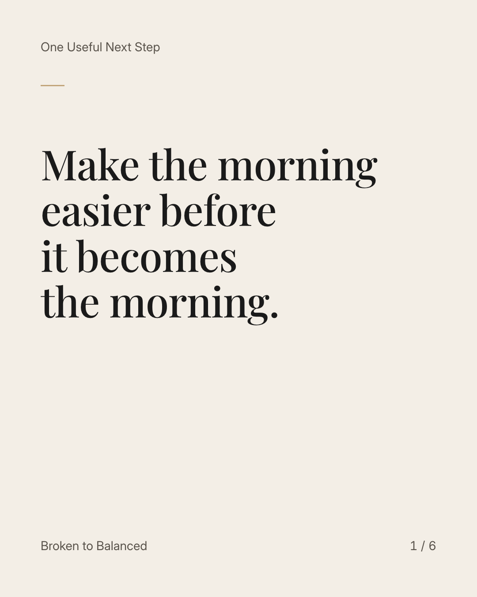
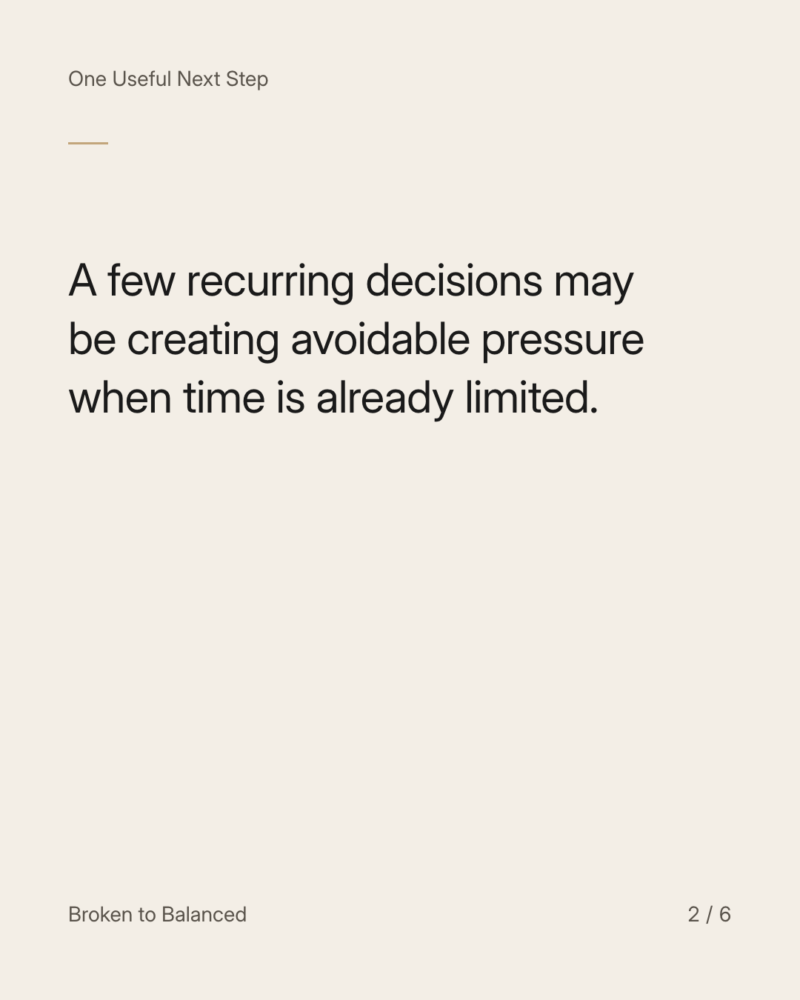
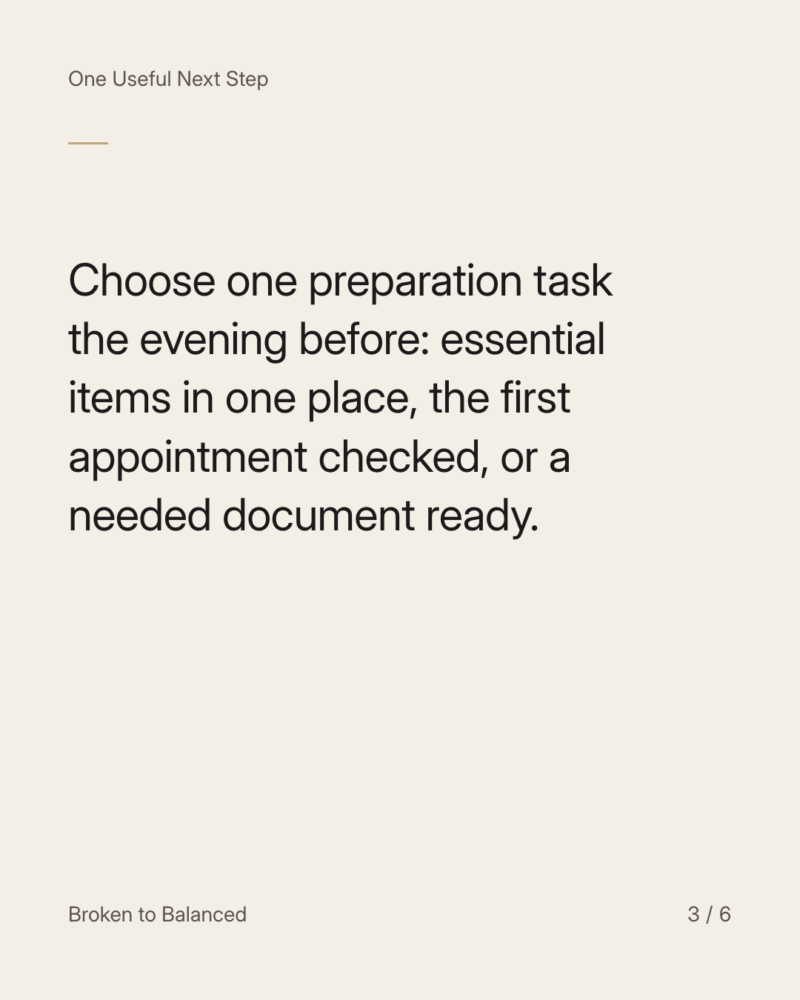
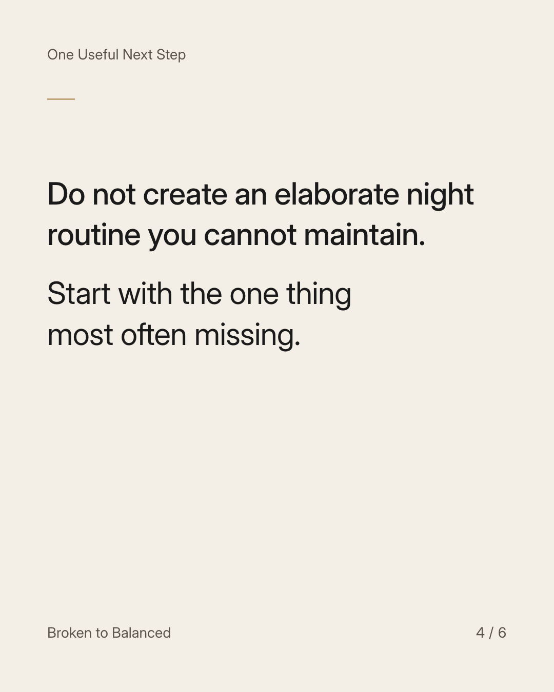
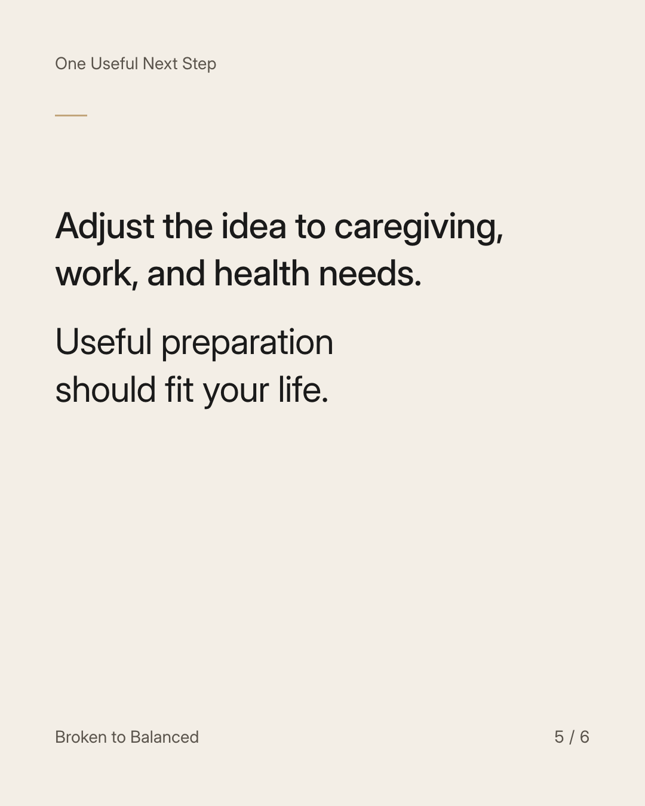
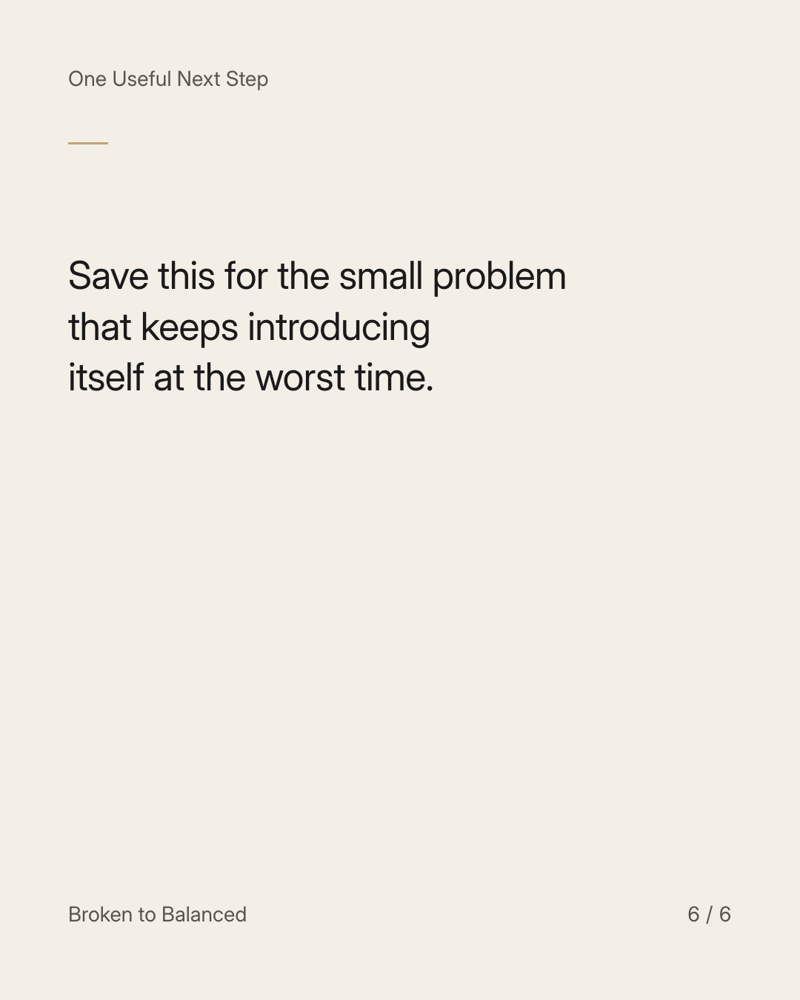

Exact text and accessibility text
Make the morning easier before it becomes the morning.
Slide 1 of 6. Make the morning easier before it becomes the morning.


Exact text and accessibility text
A few recurring decisions may be creating avoidable pressure when time is already limited.
Slide 2 of 6. A few recurring decisions may be creating avoidable pressure when time is already limited.


Exact text and accessibility text
Choose one preparation task the evening before: essential items in one place, the first appointment checked, or a needed document ready.
Slide 3 of 6. Choose one preparation task the evening before: essential items in one place, the first appointment checked, or a needed document ready.


Exact text and accessibility text
Do not create an elaborate night routine you cannot maintain. Start with the one thing most often missing.
Slide 4 of 6. Do not create an elaborate night routine you cannot maintain. Start with the one thing most often missing.


Exact text and accessibility text
Adjust the idea to caregiving, work, and health needs. Useful preparation should fit your life.
Slide 5 of 6. Adjust the idea to caregiving, work, and health needs. Useful preparation should fit your life.


Exact text and accessibility text
Save this for the small problem that keeps introducing itself at the worst time.
Slide 6 of 6. Save this for the small problem that keeps introducing itself at the worst time.
Exact caption
Plain-text fallback: select and copy the caption.